|
Rare
Rare Ring
ก่อนจะเริ่มหา Rare Item ต้องมี Rare Ring เสียก่อน
Rare Ring ช่วยเพิ่มอัตราการ Drop Item ของศัตรูให้เพิ่มมากขึ้น
Item in Hard Game
หากเล่นจบ 1 รอบ และเริ่มเล่นใหม่แบบ Hard
จะมี Item ที่ไม่มีในแบบ Normal อยู่ 6 ชิ้น คือ
1. Kaiser Knuckle
ATT +10
เก็บได้ที่ห้องลับ WallSecret03
2. Silver Gun
ATT +42
เก็บได้ที่ห้องที่ได้ดาบ Bulmung ใน Zone : The Arena
3. Death's Sickle
ATT +130
LCK +13
เก็บได้ที่หน้าห้อง Boss : Death ต้องใช้โซล Giant Bat บินเข้าไปเก็บ
4. Death's Robe
ATT +4
DEF +44
STR +4
CON +4
INT +13
LUK +13
เก็บได้บริเวณ Zone : Clock Tower ต้องใช้โซล Giant Bat บินเข้าไปเก็บ
5. Tear Of Blood
ATT +1
DEF +8
STR +1
CON +1
INT +1
เก็บได้ที่หน้าห้อง Boss : Graham ต้องใช้โซล Ginat Bat บินเข้าไปเก็บ
6. Chaos Ring
+1 All
ต้องเก็บโซลให้ครบ 100% เสียก่อน จึงจะเก็บ Choas Ring ได้
เก็บได้ที่ห้องซ้ายบนสุดใน Zone : Chaostic Realm
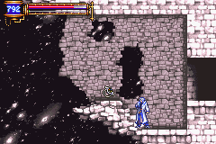
(Chaos Ring เมื่อสวมใส่ MP จะไม่ลด)
Kaiser Knuckle, Silver Gun, Death's Sickle
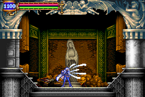
Item in Boss Rush
หากเล่นจบ 1 รอบ จะมีโหมด Boss Rush ให้เล่นได้
หากเล่นและทำเวลาได้ดี จะได้ Item เป็นของตอบแทน ดังนี้
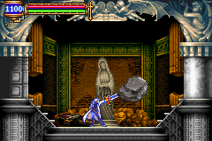
เล่นจบภายในเวลาไม่เกิน 6 นาที จะได้ดาบ Excaliber
เล่นจบภายในเวลาไม่เกิน 5 นาที จะได้ปืน Positron Rifle
เล่นจบภายในเวลาไม่เกิน 4 นาที จะได้ดาบ Valmanway
Soul Eater Ring
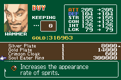
จริงๆ แล้ว Soul Eater Ring มีขายใน Shop ของ Hammer
แต่ที่ได้ชื่อว่า Rare เพราะว่า ราคาของมันสูงถึง 300,000G เลยทีเดียว
Sky Fish
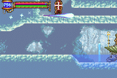
ในทางเดินส่วนล่างของปราสาท บางครั้งจะเจอแสงพุ่งผ่านไป
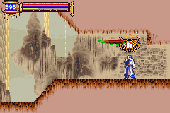
ให้กดใช้โซล Chronomage ซึ่งสามารถหยุดเวลาได้
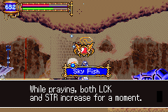
จะทำให้แสงนั้นช้าลง และจะพบว่า แท้จริงแล้ว แสงนั้นคือ Sky Fish นั่นเอง
Mandragora
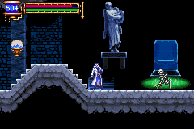
Mandragora จะถูกโครงกระดูกดึงขึ้นมา
แต่หากทำลายโครงกระดูก ก่อนที่มันจะดึงขึ้นมา จะไม่เจอ Mandragora
ต้องรอให้โครงกระดูกดึงมันขึ้นมาให้สุดเสียก่อน จึงทำลายมัน
แต่หากช้าไป ปล่อยให้ Mandragora ร้อง ก็จะไม่ได้เหมือนกัน
ต้องจับจังหวะให้ดี
Tsuchinoko
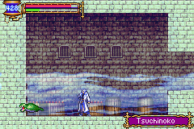
เจอที่ห้องด้านซ้ายของห้อง Boss : Big Golem
เป็นงูในตำนานของญี่ปุ่น ส่วนใหญ่จะพบเจอมันตอนมุดดินหนี
ต้องเข้าออกห้องนั้นหลายๆ ครั้งจึงจะเจอมันอยู่บนพื้นดิน
โซลของมันสามารถช่วยลดราคา Item ในร้านขายของได้
Kicker Skeleton
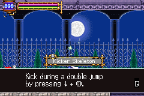
เป็นศัตรูเพียงตัวเดียว ที่ให้โซล Ability
พบได้บริเวณหน้าห้อง Save ใกล้ๆ ประตูดำ
Alucard
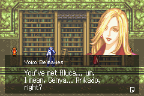
มีเพียงครั้งเดียวเท่านั้น ที่ Yoko หลุดปากเกือบจะพูดชื่อ Alucard ออกมา
|